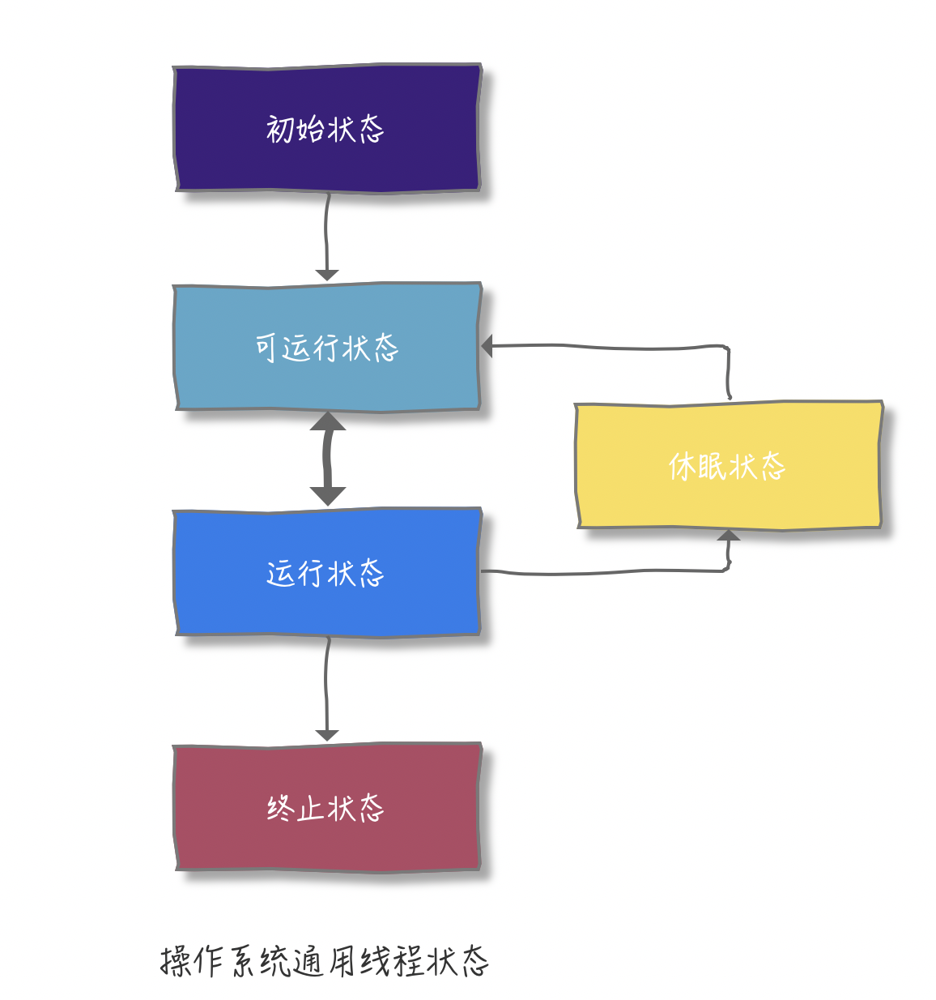
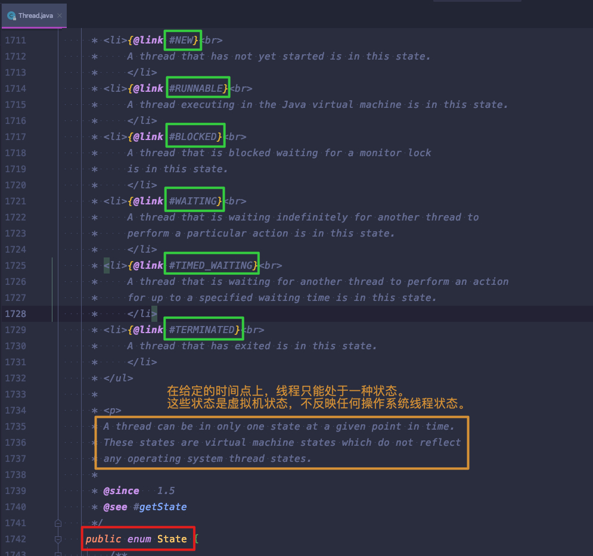
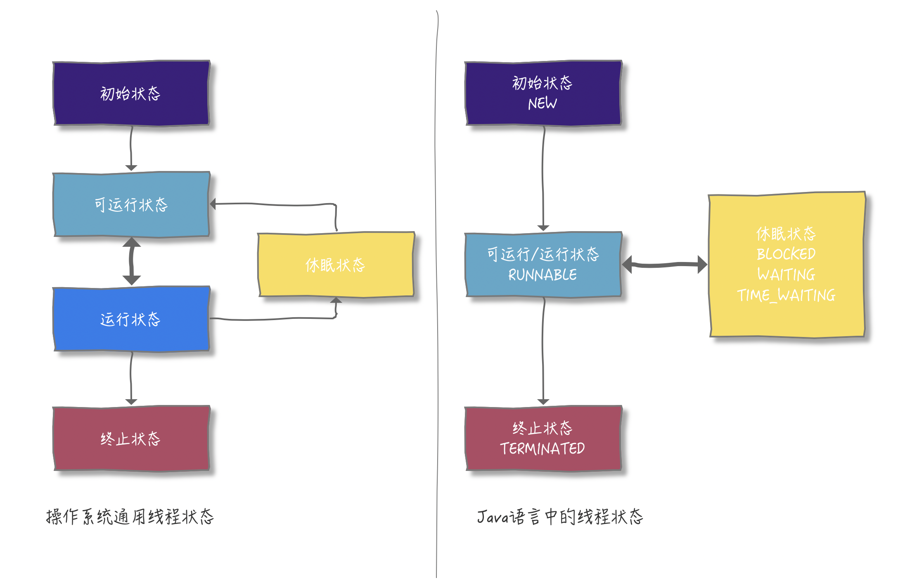
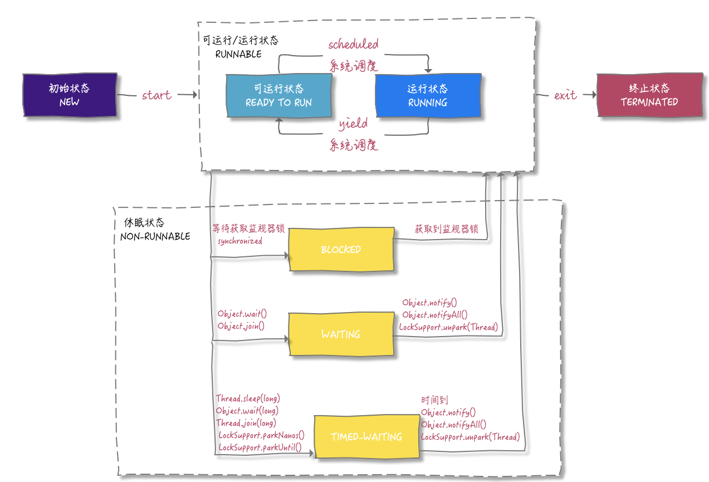

线程生命周期
看了看Thread的源码之后很奇怪，到底是6个生命周期还是5个生命周期，后来发现，我把操作系统通用线程状态和编程语言封装后的线程状态概念混淆了。
-
操作系统通用线程状态

包含上述五种
-
初始状态：线程已经被创建，但是还不允许分配CPU执行【操作系统里，线程其实还没被创建】
-
可运行状态：线程可以分配CPU执行【操作系统里，线程已经创建成功了】
-
运行状态：该可运行的线程分配了CPU时间片开始执行
-
休眠状态：线程调用了某个阻塞的API或者等待某个事件条件可用，休眠会释放CPU使用权
-
终止状态：线程执行结束或者出现异常
- 编程语言封装后的线程状态
从Thread源码中可以看出，定义的这个State枚举类里有有6种状态

-
NEW 线程还未启动
-
RUNNABLE 正在JVM中执行
-
BLOCKED 正在等待资源锁
-
WAITING 正在无限等待另一个线程执行特定操作 1.Object.wait() 2.Thread.join() 3.LockSupport.park()
-
TIMED_WAITING 等待另一个线程执行特定操作，直到达到具体等待时间 1.Thread.sleep() 2.Object.wait(long) 3.Thread.join(long) 4.LockSupport.parkNanos() 5.LockSupport.parkUtil()
-
TERMINATED 线程退出
注释后面提到的虚拟机的状态不反映任何操作系统线程状态，指的就是以操作系统通用状态来看，线程调用阻塞式 API，会变为休眠状态（释放CPU使用权），但在JVM层面，Java线程状态不会发生变化，也就是说Java线程的状态依旧会保持在 RUNNABLE 状态。JVM并不关心操作系统调度的状态。在JVM看来，等待CPU使用权（操作系统里是处在可执行状态）与等待I/O（操作系统是处在休眠状态），都是等待某个资源，所以都归入了RUNNABLE 状态
-
两者关系

从图中可以看出，可运行状态和运行状态在代码里统一都是RUNNABLE，休眠状态分为具体的三种：BLOCKED、WAITING、TIME_WAITING，都没有CPU使用权
-
状态转换

new Thread()则状态为NEW
调用start()则变成RUNNABLE状态
RUNNABLE<=>BLOCKED
等待synchronized内置隐式锁（RUNNABLE->BLOCKED）
【获取synchronized内置隐式锁（BLOCKED->RUNNABLE）】
RUNNABLE<=>WAITING
调用1.Object.wait() 2.Thread.join() 3.LockSupport.park() （RUNNABLE->WAITING）
【调用1.Object.notify()/notifyAll() 2.LockSupport.unpark(Thread)（WAITING->RUNNABLE）】
RUNNABLE<=>TIMED_WAITING
调用1.Thread.sleep() 2.Object.wait(long) 3.Thread.join(long) 4.LockSupport.parkNanos() 5.LockSupport.parkUtil() （RUNNABLE->TIMED_WAITING）
【休眠时间到了或者调用1.Object.notify()/notifyAll() 2.LockSupport.unpark(Thread)（TIMED_WAITING->RUNNABLE）】
WAITING与TIMED_WAITING的区别在于调用的API是否带时间参数